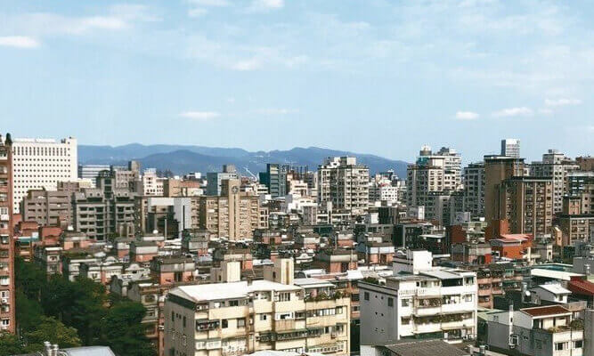
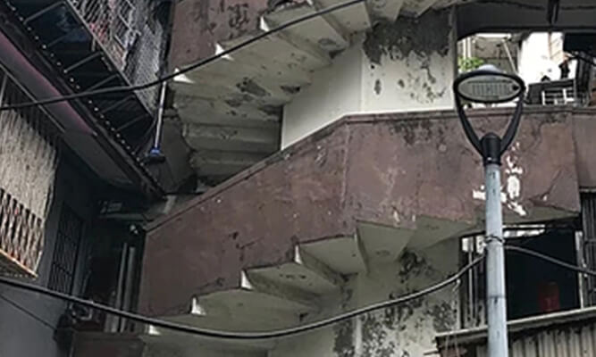
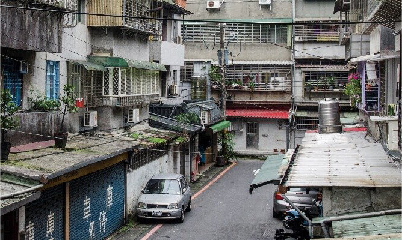

<!DOCTYPE html>
<html>
  <head>
    <meta charset="utf-8">
    <meta http-equiv="X-UA-Compatible" content="IE=edge">
    <meta name="viewport" content="width=device-width, initial-scale=1.0, user-scalable=no, shrink-to-fit=no, minimum-scale=1.0, maximum-scale=1.0">
    <title>〈第一屆〉危老都更博覽會 樂居好城市</title>
    <!-- Global site tag (gtag.js) - Google Analytics-->
    <script async src="https://www.googletagmanager.com/gtag/js?id=UA-57864110-2"></script>
    <script>
      window.dataLayer = window.dataLayer || [];
      function gtag(){dataLayer.push(arguments);}
      gtag('js', new Date());
      
      gtag('config', 'UA-57864110-2');
    </script>
    <!-- Facebook og-->
    <meta property="og:site_name" content="〈第一屆〉危老都更博覽會 樂居好城市">
    <meta property="og:title" content="〈第一屆〉危老都更博覽會 樂居好城市">
    <meta property="og:image" content="/assets/cms/images/fb-og.png">
    <meta property="og:url" content="http://www.wealth.com.tw/safehouse1/">
    <meta property="og:description" content="危老都更博覽會：匯聚都市更新相關產業透過博覽會的舉辦，鼓勵民眾從都更及危老重建的思考角度出發、闔家參與，善用政府的危老都更政策，搭配營建業者提出的翻修或改建方案，讓家有更好的未來！">
    <meta property="og:type" content="website">
    <meta property="fb:page_id" content="398858137734889">
    <meta name="keywords" content="危老建築、都市更新、都更、房價、不動產、房地產、貸款、房仲、老屋改建、住宅容積、加速重建條例、危老條例、耐震、地震、都市計劃、建築容積、都市再生、文化資產、老屋重建、危老獎勵、危老重建、老屋翻新">
    <meta name="description" content="危老都更博覽會：匯聚都市更新相關產業透過博覽會的舉辦，鼓勵民眾從都更及危老重建的思考角度出發、闔家參與，善用政府的危老都更政策，搭配營建業者提出的翻修或改建方案，讓家有更好的未來！">
    <link rel="stylesheet" href="assets/cms/css/bootstrap-reset-breakpoint.css">
    <link rel="stylesheet" href="assets/cms/css/module/animate.css">
    <link rel="stylesheet" href="assets/cms/css/layout.css">
    <link rel="stylesheet" href="assets/cms/css/style.css">
    <!-- Google Tag Manager-->
    <script>
      (function(w,d,s,l,i){w[l]=w[l]||[];w[l].push({'gtm.start':
      new Date().getTime(),event:'gtm.js'});var f=d.getElementsByTagName(s)[0],
      j=d.createElement(s),dl=l!='dataLayer'?'&l='+l:'';j.async=true;j.src=
      'https://www.googletagmanager.com/gtm.js?id='+i+dl;f.parentNode.insertBefore(j,f);
      })(window,document,'script','dataLayer','GTM-5N96QXB');
    </script>
    <!-- End Google Tag Manager-->
  </head>
</html>
<body>
  <!-- Google Tag Manager (noscript)-->
  <noscript>
    <iframe src="https://www.googletagmanager.com/ns.html?id=GTM-5N96QXB" height="0" width="0" style="display:none;visibility:hidden"></iframe>
  </noscript>
  <!-- End Google Tag Manager (noscript)-->
  <!-- ============================== header start =============================-->
  <header id="header">
    <div class="header-wrap">
      <div class="header-content wow fadeIn">
        <div class="main-title">
          <h1><span class="wow zoomIn" data-wow-duration=".5s" data-wow-delay=".6s"></span></h1>
          <p class="slogan wow fadeInRight" data-wow-duration=".8s" data-wow-delay=".3s"></p>
        </div>
      </div>
    </div>
  </header>
  <nav>
    <div class="menu-list">
      <ul>
        <li><a href="#expo">博覽會</a></li>
        <li><a href="#seminar">研討會</a></li>
        <li><a href="">什麼是危老都更</a></li>
        <li><a href="">精彩影片</a></li>
        <li><a href="">精彩照片</a></li>
        <li><a href="">合作夥伴</a></li>
        <li class="fb-btn"><a href=""></a></li>
      </ul>
    </div>
  </nav>
  <!-- ============================== header close =============================--><a class="go-top" href="#header"></a>
  <!-- ============================== main start ===============================-->
  <main>
    <article>
      <section class="activity">
        <div class="wrap" id="expo">
          <div class="light"></div>
          <div class="content">
            <h3>博覽會</h3>
            <p class="caption">透過博覽會的舉辦，匯聚危老及都更相關產業，<br>透過輕鬆有趣、寓教於樂的活動形式，<br>讓民眾更了解危險老舊建築與都市更新的重要性！<br>大手牽小手，善用政府政策，<br>一起為我們的城市未來努力吧！</p>
            <div class="activity-info">
              <p><span class="tag">時間</span>108年12月7日(六)  早上9:30~下午16:00</p>
              <p><span class="tag">地點</span>國立臺北商業大學(臺北市中正區濟南路一段321號)<a class="map-icon" href=""></a></p>
            </div>
            <div class="info-list"><a href="#" data-toggle="modal" data-target="#stageModal">舞台活動</a><a href="#" data-toggle="modal" data-target="#mapModal">攤位內容</a><a href="#" data-toggle="modal" data-target="#activityModal">活動體驗</a><a href="#" data-toggle="modal" data-target="#lotteryModal">抽獎專區</a></div>
          </div>
        </div>
        <div class="wrap" id="seminar">
          <div class="light"></div>
          <div class="content">
            <h3>研討會</h3>
            <p class="slogan">智慧住 樂活居 台灣都更現在式</p>
            <p class="caption">根據內政部統計資料(截至2018年3月)，<br>現階段全台屋齡超過30年的房屋超過400萬戶，
              未來十年更將增加至近600萬戶。<br>面對全台大量老化房屋，中央政府積極加速修訂「都市更新三法」來加快都更推動的腳步；<br>本次研討會將匯集各方智言與推動都更實務經驗進行探討，<br>期盼提升民眾居住品質，達成全民智慧住、樂活居的理想生活！<br>全程免費，歡迎踴躍參與。
            </p>
            <div class="activity-info">
              <p><span class="tag">日期</span>108年12月7日(六)  下午14：00~16：10</p>
              <p><span class="tag">地點</span>國立臺北商業大學 承曦樓10樓 國際會議廳 (臺北市中正區濟南路一段321號)<a class="map-icon" href=""></a></p>
            </div>
            <div class="info-list"><a href="#" data-toggle="modal" data-target="#stepModal">論壇流程</a><a href="#" data-toggle="modal" data-target="#signupModal">立即報名</a></div>
          </div>
        </div>
      </section>
      <section class="about-renewal">
        <div class="wrap">
          <div class="content">
            <h3>什麼是危老都更</h3>
            <ul> 
              <li class="pic01"><a href=""><span>都市更新和危老重建有什麼不同？</span></a></li>
              <li class="pic02"> <a href=""><span>都市更新和危老重建有什麼不同？</span></a></li>
              <li class="pic03"> <a href=""><span>都市更新和危老重建有什麼不同？</span></a></li>
              <li class="pic04"> <a href=""><span>都市更新和危老重建有什麼不同？</span></a></li>
              <li class="pic05"> <a href=""><span>都市更新和危老重建有什麼不同？</span></a></li>
              <li class="pic06"> <a href=""><span>都市更新和危老重建有什麼不同？</span></a></li>
            </ul>
          </div>
        </div>
      </section>
      <section class="playlist">
        <div class="wrap">
          <div class="content">
            <h3>精彩影片</h3>
            <ul> 
              <li>
                <div class="video-content">
                  <iframe src="https://www.youtube.com/embed/gNdlZAaHNEM" frameborder="0" allow="accelerometer; autoplay; encrypted-media; gyroscope; picture-in-picture" allowfullscreen></iframe>
                </div>
              </li>
              <li>
                <div class="video-content">
                  <iframe src="https://www.youtube.com/embed/gNdlZAaHNEM" frameborder="0" allow="accelerometer; autoplay; encrypted-media; gyroscope; picture-in-picture" allowfullscreen></iframe>
                </div>
              </li>
              <li>
                <div class="video-content">
                  <iframe src="https://www.youtube.com/embed/gNdlZAaHNEM" frameborder="0" allow="accelerometer; autoplay; encrypted-media; gyroscope; picture-in-picture" allowfullscreen></iframe>
                </div>
              </li>
              <li>
                <div class="video-content">
                  <iframe src="https://www.youtube.com/embed/gNdlZAaHNEM" frameborder="0" allow="accelerometer; autoplay; encrypted-media; gyroscope; picture-in-picture" allowfullscreen></iframe>
                </div>
              </li>
              <li>
                <div class="video-content">
                  <iframe src="https://www.youtube.com/embed/gNdlZAaHNEM" frameborder="0" allow="accelerometer; autoplay; encrypted-media; gyroscope; picture-in-picture" allowfullscreen></iframe>
                </div>
              </li>
              <li>
                <div class="video-content">
                  <iframe src="https://www.youtube.com/embed/gNdlZAaHNEM" frameborder="0" allow="accelerometer; autoplay; encrypted-media; gyroscope; picture-in-picture" allowfullscreen></iframe>
                </div>
              </li>
            </ul>
          </div>
        </div>
      </section>
      <section class="gallary">
        <div class="wrap">
          <div class="content">
            <h3>精彩照片</h3>
            <ul> 
              <li class="pic01"><span></span></li>
              <li class="pic02"><span></span></li>
              <li class="pic03"><span></span></li>
              <li class="pic04"><span></span></li>
              <li class="pic05"><span></span></li>
              <li class="pic06"><span></span></li>
            </ul>
          </div>
        </div>
      </section>
      <section class="partner">
        <div class="wrap"> 
          <div class="content">
            <h3>合作夥伴</h3>
            <div class="partner-list">
              <h4>指導單位</h4>
              <ul> 
                <li><a href=""></a></li>
                <li><a href=""></a></li>
              </ul>
            </div>
            <div class="partner-list">
              <h4>主辦單位</h4>
              <ul> 
                <li><a href=""></a></li>
              </ul>
            </div>
            <div class="partner-list">
              <h4>協辦單位</h4>
              <ul> 
                <li><a href=""></a></li>
                <li><a href=""></a></li>
              </ul>
            </div>
            <div class="partner-list">
              <h4>共同主辦</h4>
              <ul> 
                <li><a href=""></a></li>
                <li><a href=""></a></li>
                <li><a href=""></a></li>
                <li><a href=""></a></li>
              </ul>
            </div>
            <div class="partner-list">
              <h4>合作單位</h4>
            </div>
          </div>
        </div>
      </section>
    </article>
  </main>
  <!-- ============================== main close ===============================-->
  <!-- ============================== footer start =============================-->
  <footer> 
    <div class="footer-wrap">本網站版權屬於財信雜誌社股份有限公司所有，據稱本站同意，不要擅用文字及圖案<br><br>讀者服務專線：（02）2551-2561分機224〜226</div>
  </footer>
  <!-- ============================== footer close =============================-->
  <div class="modal fade" id="activityModal" tabindex="-1" role="dialog" aria-labelledby="activityModalLabel" aria-hidden="true">
    <div class="modal-dialog" role="document">
      <div class="modal-content">
        <div class="modal-header">
          <h5 class="modal-title" id="activityModalLabel">Modal title</h5>
          <button class="close" type="button" data-dismiss="modal" aria-label="Close"><span aria-hidden="true">×</span></button>
        </div>
        <div class="modal-body">...</div>
        <div class="modal-footer">
          <button class="btn btn-secondary" type="button" data-dismiss="modal">Close</button>
          <button class="btn btn-primary" type="button">Save changes</button>
        </div>
      </div>
    </div>
  </div>
</body>
<!-- Common-->
<script src="assets/cms/js/module/jquery.min.js"></script>
<script src="assets/cms/js/bootstrap/bootstrap.min.js"></script>
<script src="assets/cms/js/bootstrap/bootstrap.bundle.min.js"></script>
<script src="assets/cms/js/module/wow.min.js"></script>
<script src="assets/cms/js/main.js"></script>
<script>
  $(function () {
      new WOW().init();
  });
</script>